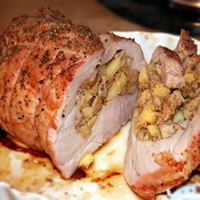

Apple Walnut Stuffed Pork Roast

Description
An apple-walnut-breadcrumb stuffing is wrapped inside a pork roast, making an easy to cook and serve meal.
Ingredients
- 5 tablespoons butter
- 1 apple - peeled, cored, and chopped
- 1 small onion, chopped
- 1 celery stalk, diced
- ½ cup chopped walnuts
- 1 cup unsweetened applesauce
- 1 ½ cups water
- 5 cups coarse dry breadcrumbs
- ½ teaspoon ground cinnamon
- ½ teaspoon kosher salt
- ¼ teaspoon ground cloves
- ¼ teaspoon ground nutmeg
- ¼ teaspoon ground ginger
- Kosher salt and fresh ground pepper to taste
- 1 (3 pound) boneless rolled pork loin roast
Steps
- Preheat oven to 325 degrees F (165 degrees C).
- Melt the butter in a medium saucepan over medium heat. Stir in the apple, onion, celery, and walnuts, and cook 5 minutes, until vegetables are tender. Mix in the applesauce, water, and breadcrumbs. Cook and stir until the breadcrumbs have absorbed the liquid. Season with cinnamon, kosher salt, cloves, nutmeg, and ginger.
- Unroll the pork roast, and place in a baking dish. Season with salt and pepper to taste. Spoon the stuffing mixture over the roast. Arrange any excess stuffing around the roast. Roll the roast so that the fatty side is on top, and tie with kitchen twine.
- Bake 45 to 50 minutes in the preheated oven, to an internal temperature of 145 degrees F (63 degrees C).
Link to Original Recipe page